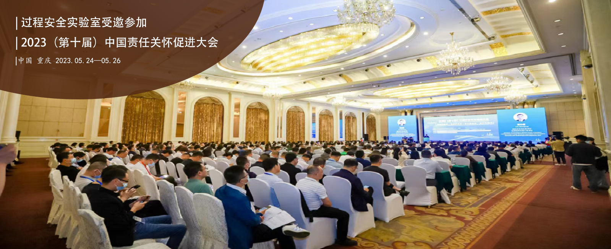
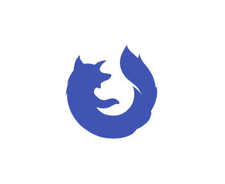

Previous
Next
更多信息

关于我们
打造专业化的科研团队，分享交流最新过程安全前沿科技，欢迎交流联系！
近期动态
过程安全实验室受邀参加2023(第十届)中国责任关怀促进大会
张彬教授担任欧洲化学工程联合会Loss Prevention工作组特邀代表
过程安全实验室受邀参加第18届全球过程安全大会并做报告
张彬教授受邀参加2021中国责任关怀促进大会并做报告
——更多文章请点击——
加入我们
公告
友情链接
Mary Kay O'Connor Process Safety Center
南京工业大学
南京工业大学安全科学与工程学院